資源讀取是軟體開發過程中的必備系統，在 Unity 中支持兩種資源讀取方式，Resources 及 AssetBundle。
本篇文章會分別解析這兩種讀取方式，分析其讀取流程及詳細過程。
關鍵字快搜：Resources Workflow、Resources API、AssetBundle Workflow、AssetBundle API、DLC、AssetBundle Patch
由於 Resources 讀取方式相當容易理解，且過程簡單，所以絕大多數的開發者在初次接觸 Unity 時，都會使用這種讀取方式。
只需要將資源存放至 Resources 目錄下，即可完成前置作業。
PS. 任何在專案內 Resources 目錄下的資源都支援這種讀取方式。
步驟1. 將資源存放至 Resources 目錄下
步驟2. 將資源讀取至記憶體中
步驟3. 使用資源
步驟4. 卸載資源
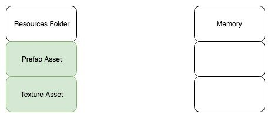
步驟1. 將資源存放至 Resources 目錄下
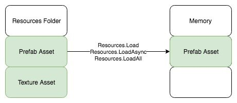
步驟2. 將資源讀取至記憶體中
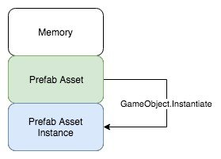
步驟3. 使用資源（GameObject.Instantiate）
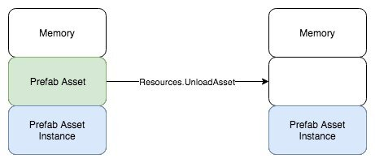
步驟4. 卸載資源
使用 Resources 讀取系統一段時間後，開發者會察覺到一個需要解決的問題。
常常會希望玩家可以不重新下載遊戲安裝包，只針對需要的資源進行下載更新，也就是透過 DLC（Downloadable Content）的方式動態更新遊戲資源。DLC 往往會應用在許多地方，遊戲營運過程中遇到節慶，開發者可以直接透過動態更新的方式讓玩家取得對應的節慶資源包。然而 Resources 讀取系統並不支援這種更新方式。
AssetBundle 是 Unity 提供的一種壓縮檔案。
每個 AssetBundle 都是一個容器，或者可以將其理解為資料夾，負責將各種資源（Prefab、材質、貼圖、音效、文字檔、場景…等）收集起來，最後將其壓縮打包即為 AssetBundle。
Unity 提供了三種壓縮格式，分別為無壓縮、標準壓縮、Chunk Based 壓縮
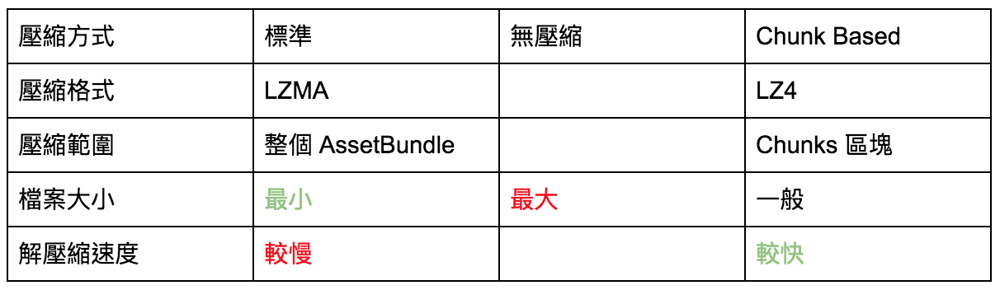
AssetBundle 壓縮格式
在建置 AssetBundle 時，Unity 提供了許多的建置選項，方便開發者進行客製化配置。
Unity – Scripting API: BuildAssetBundleOptions
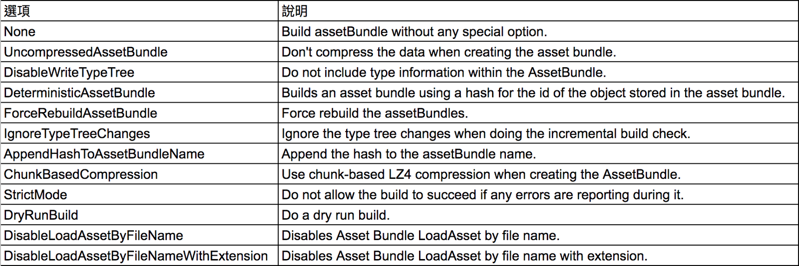
AssetBundle 建置選項
步驟1. 設定 AssetBundle Name
步驟2. 設定建置選項
步驟3. 打包 AssetBundle BuildPipeline.BuildAssetBundles
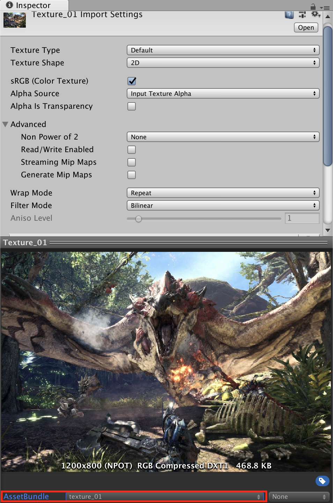
設定 AssetBundle Name
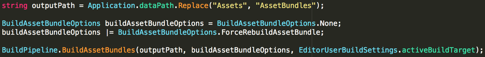
設定建置選項並打包
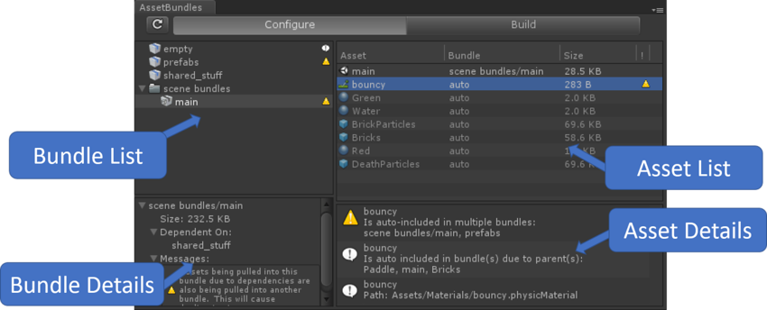
亦可使用 AssetBundle Browser 來設定
完成 AssetBundle 建置後，一共會產生 2*(N+1) 個檔案（N = 設定的 AssetBundle Name 數量），包含兩種檔案類型。
1. AssetBundle 檔案
AssetBundle 壓縮檔，解壓縮後可讀取資源
2. Manifest 檔案
每一個 AssetBundle 檔案都會有一個對應的 Manifest 檔案，並依據 AssetBundle File 的不同會衍生出兩種不同類型。
2a. AssetBundleManifest Manifest 檔案
紀錄建置時產生的所有 AssetBundle 名稱、Hash128、以及 AssetBundle 之間的相依性
2b. AssetBundle Manifest 檔案
紀錄該 AssetBundle 所包含的資源、CRC、Hash128 以及資源與 AssetBundle 的相依性
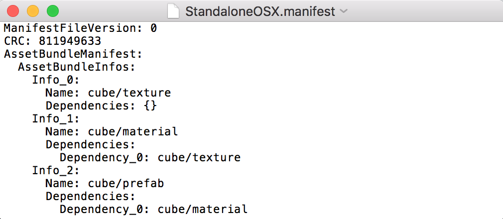
AssetBundleManifest Manifest File
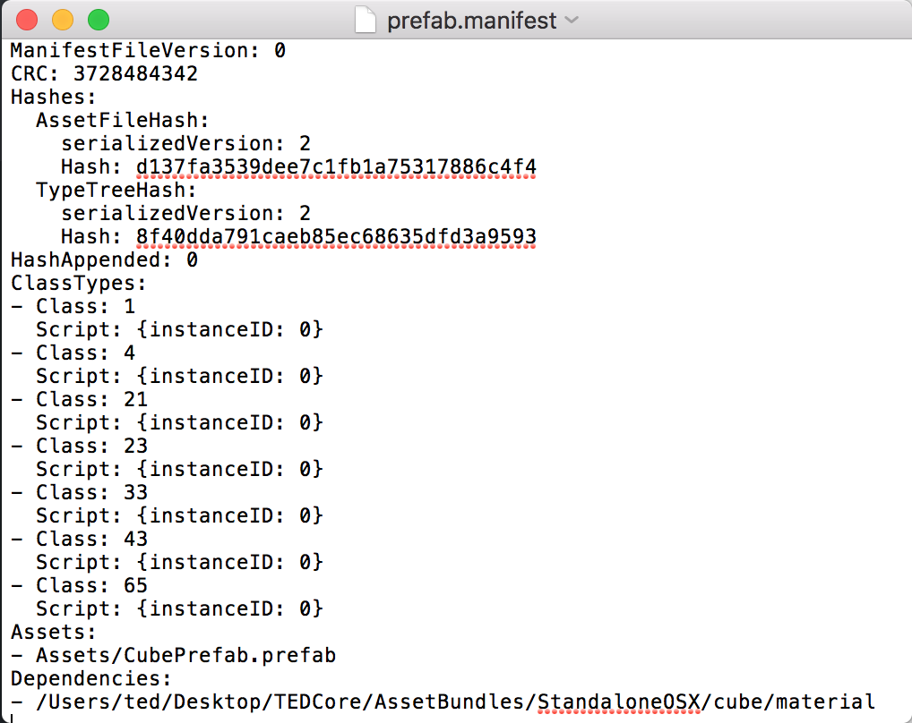
AssetBundle Manifest File
步驟1. 從外部下載 AssetBundle 至快取
步驟2a. 從快取中將 AssetBundle 讀取至記憶體
步驟2b. 從 StreamingAssets 目錄中將 AssetBundle 讀取至記憶體
步驟3. 從 AssetBundle 中將資源讀取至記憶體
步驟4. 使用資源（GameObject.Instantiate）
步驟5. 卸載資源
步驟6a. 卸載 AssetBundle 並保留相關鏡像資源
步驟6b. 卸載 AssetBundle 及相關鏡像資源
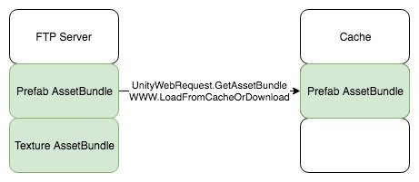
步驟1. 從外部下載 AssetBundle 至快取
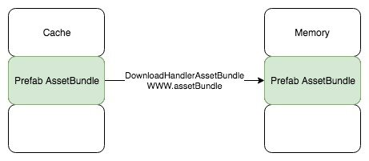
步驟2a. 從快取中將 AssetBundle 讀取至記憶體
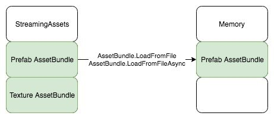
步驟2b. 從 StreamingAssets 目錄中將 AssetBundle 讀取至記憶體
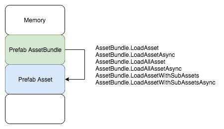
步驟3. 從 AssetBundle 中將資源讀取至記憶體
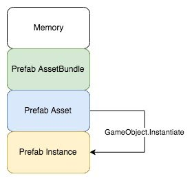
步驟4. 使用資源（GameObject.Instantiate）
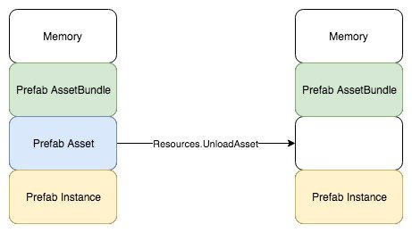
步驟5. 卸載資源
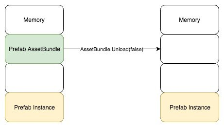
步驟6a. 卸載 AssetBundle 並保留相關鏡像資源
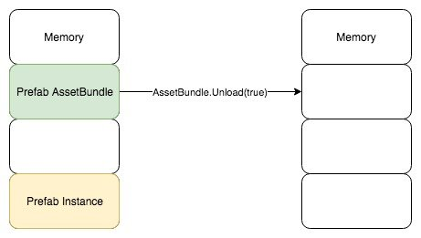
步驟6b. 卸載 AssetBundle 及相關鏡像資源
理解完如何建置 AssetBundle 及載入流程之後，接下來可以針對 DLC 功能的部分來做解析。
讀取 AssetBundle 時，可以透過 FTP Server 下載後從快取讀取或從 StreamingAssets 目錄中讀取，然而 StreamingAssets 目錄中的 AssetBundle 無法採用快取機制，只能夠以初始包的方式來使用。
PS. StreamingAssets 中的 AssetBundle 與快取 AssetBundle 兩者是獨立的檔案，一但利用快取機制下載 AssetBundle，則會產生兩倍的記憶體使用量。
目前支持快取機制的方式有三種：
1. WWW.LoadFromCacheOrDownload
2. UnityWebRequest.GetAssetBundle (Removed in version 2018.2.3)
3. UnityWebRequestAssetBundle.GetAssetBundle
其中會需要這些資料作為快取依據：
1. URL
2. Hash128
3. CRC
URL
AssetBundle 下載路徑，只需要配合專案的 FTP Server 路徑即可。
Hash128
可以透過 AssetBundleManifest.GetAssetBundleHash 來取得 AssetBundle 對應的 Hash128
CRC
AssetBundleManifest 中並沒有包含 CRC 資訊所以需要另外處理。
在建置過程中可以利用 BuildPipeline.GetCRCForAssetBundle、BuildPipeline.GetHashForAssetBundle 這兩個方法來收集 AssetBundle 的 CRC 及 Hash，並將這些資料記錄起來，作爲快取機制的依據。
Unity – Scripting API: Resources
Unity – Manual: AssetBundles
Unity – Scripting API: BuildAssetBundleOptions
Unity – Manual: Unity Asset Bundle Browser tool
Unity – Manual: Building AssetBundles
Unity – Scripting API: BuildPipeline
Unity – Manual: Patching with AssetBundles